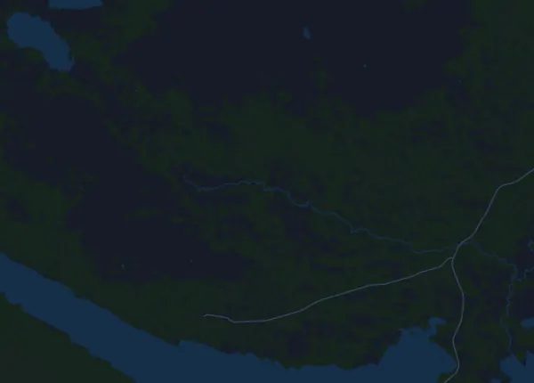

27K
- Distance
- 27 km
- Dénivelé positif
- ↑ 872 m
- Point culminant
- 1 021 m d’altitude
- Terrain
- Trail et sentiers
- Profil
- Très vallonné
- Départ
- 9 h 00
Profil d’altitude
Prépare-toi avec Mila
Mila est une app avec un coach de course à pied. Ajoute une course à ton plan : le coach planifie tes semaines jusqu’au départ selon ta forme, et te donne un pronostic de temps et un plan pour l’allure, l’hydratation et l’énergie sur le parcours.

La bonne séance. Le bon jour.
Le parcours

À propos du parcours
Salomon 27K est un trail de 27 km (Årefjällen, Suède). Le parcours compte 872 m de dénivelé positif et 998 m de dénivelé négatif, soit 32 m par km : il est donc très vallonné. Le point culminant est à 1 021 m d’altitude et le point le plus bas à 498 m.
La plus grande montée commence au km 0,0 : 362 m de dénivelé sur 3,8 km, à 9,6 % de moyenne, jusqu’à 1 021 m d’altitude. Au total, le parcours compte 6 montées d’au moins 25 m ; la dernière commence au km 26,8.
Dans l’app Mila, le coach décrit le parcours en détail dans ta langue et planifie ton allure et ton ravitaillement.
Montées
| Début | Longueur | Dénivelé | Pente | Sommet (m d’altitude) |
|---|---|---|---|---|
| km 0,0 | 3,8 km | 362 m | 9,6 % | 1 021 |
| km 6,8 | 3 km | 145 m | 4,9 % | 956 |
| km 12,8 | 2,6 km | 173 m | 6,6 % | 893 |
| km 19,0 | 1,6 km | 54 m | 3,3 % | 748 |
| km 22,0 | 1,8 km | 25 m | 1,4 % | 726 |
| km 26,8 | 880 m | 29 m | 3,3 % | 535 |
Avant le départ
Heures de départ
- 9 h 00
Lieu de départ
Trillevallen
Tableau d’allures
27K en 2:15:00 – allure au km et temps de passage
5:00 min/km · km 10 : 50:00 · km 20 : 1:40:00 · arrivée : 2:15:00
27K en 2:45:00 – allure au km et temps de passage
6:07 min/km · km 10 : 1:01:07 · km 20 : 2:02:13 · arrivée : 2:45:00
27K en 3:15:00 – allure au km et temps de passage
7:13 min/km · km 10 : 1:12:13 · km 20 : 2:24:27 · arrivée : 3:15:00
27K en 3:30:00 – allure au km et temps de passage
7:47 min/km · km 10 : 1:17:47 · km 20 : 2:35:33 · arrivée : 3:30:00
Les temps supposent une allure régulière du début à la fin. C’est un simple calcul, pas un pronostic : dans les montées, dans la foule et aux ravitaillements, l’allure varie.
Questions fréquentes
Quand a lieu 27K ?
27K a lieu le dimanche 1er août 2027. Vérifie la date et l’heure de départ auprès de l’organisateur.
À quelle heure part 27K ?
Selon l’organisateur : 9 h 00.
27K : quelle distance et quel dénivelé ?
La course fait 27 km, avec 872 m de dénivelé positif et 998 m de dénivelé négatif. Le point culminant est à 1 021 m d’altitude.
27K : à quoi ressemble le parcours ?
Le parcours est très vallonné, avec 32 m de dénivelé par km en moyenne. Il compte 6 montées d’au moins 25 m ; la plus grande commence au km 0,0 : 362 m sur 3,8 km. Il va du départ à une arrivée située ailleurs. On y court sur sentiers et en nature.
27K : comment gérer mon allure ?
Vise un effort régulier plutôt qu’une allure régulière : laisse l’allure baisser dans les montées, reprends-la quand le terrain s’aplanit, et retiens-toi sur les premiers kilomètres. Les plus grandes montées commencent au km 0,0, km 6,8, km 12,8 et km 19,0. Dans Mila, tu obtiens un plan d’allure pour ce parcours, adapté à ta forme.
D’autres courses de ce type
Autres courses à proximité
- Ottsjö 12K (1 augusti)1er août 2027 · Årefjällen, Suède
- Minimaraton 1500 m 1,5 km31 juillet 2027 · Årefjällen, Suède
- Minimaraton 800 m 0,8 km31 juillet 2027 · Årefjällen, Suède
- Åre Vertical K 5 km3 août 2027 · Årefjällen, Suède
- Fjällmaraton 100K5 août 2027 · Årefjällen, Suède
- Kia Fjällmaraton 45K7 août 2027 · Årefjällen, Suède
Prépare-toi avec Mila
La bonne séance. Le bon jour.
Les informations proviennent du fichier du parcours et de l’organisateur. Vérifie la date, les heures de départ et le règlement auprès de l’organisateur.
Mila n’est ni affiliée à l’organisateur ou aux sponsors de la course, ni sponsorisée ou approuvée par eux. Les noms et les marques appartiennent à leurs propriétaires. Organisateur ou ayant droit ? Demander une modification ou un retrait